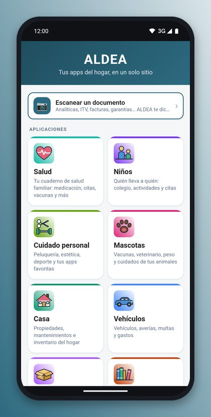
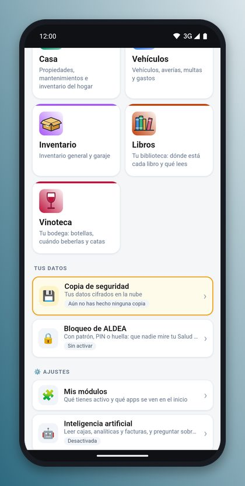
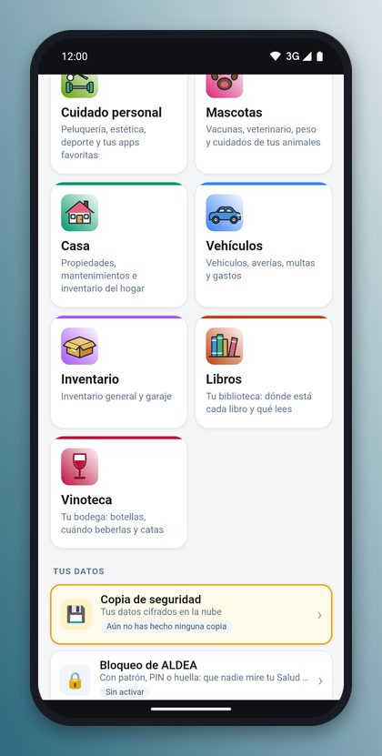
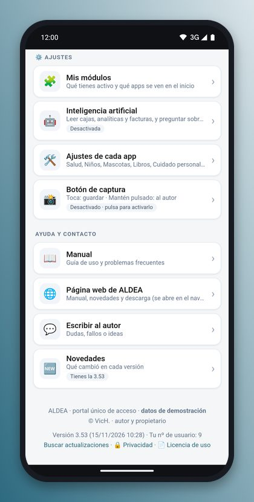
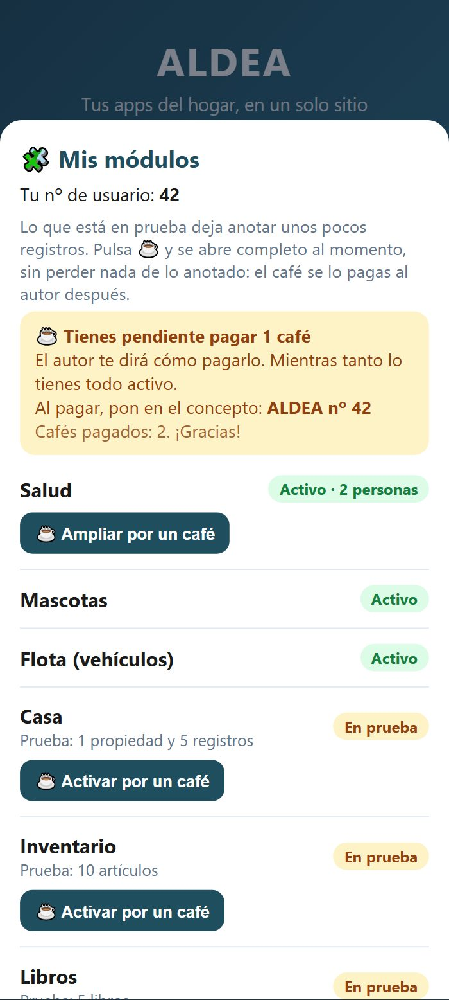
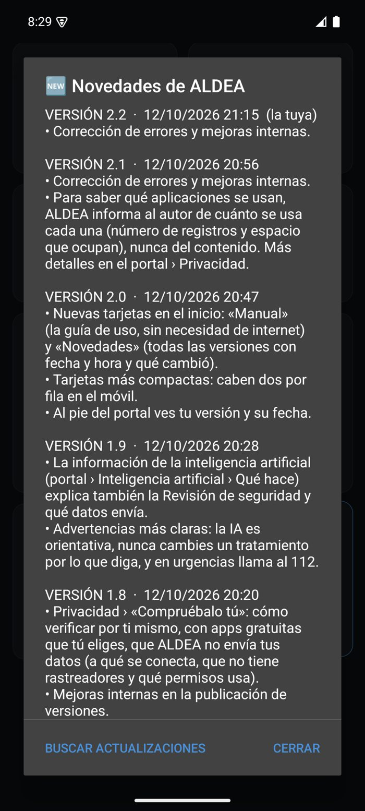

📱 Así se ve




Capturas con datos de ejemplo. Toca una para verla en grande; pasan solas (se paran mientras la miras).
4.1 El portal
- El portal es la pantalla principal. Toca una tarjeta para abrir su aplicación; ← Volver a ALDEA (arriba a la derecha) o el botón Atrás del móvil te devuelven aquí.
- En Más opciones: 🧩 Mis módulos, 💬 Escribir al autor, 💾 Copia de seguridad, 🔒 Bloqueo de ALDEA, 🤖 Inteligencia artificial, 📖 Manual (este documento), 📸 Botón de captura y 🆕 Novedades.
- Al pie: tu versión, Buscar actualizaciones, 🔒 Privacidad y 📄 Licencia de uso.
- La aplicación empieza vacía: todo lo que ves lo introduces tú.



4.2 Fase gratuita: todo abierto
ALDEA está en su fase de lanzamiento: todos los módulos están abiertos y sin límites, sin anuncios y sin pagar nada. En 🧩 Mis módulos verás «Todos tus módulos están abiertos».
4.3 Cuando ALDEA sea de pago
- Se avisará antes, dentro de la app y en la página web, con el precio y la fecha.
- Cada módulo costará lo que un café. Habrá paquetes de varios módulos y se podrán regalar.
- Necesitarás aceptar una licencia nueva: nada cambia sin que lo sepas.
4.4 Tus datos nunca se bloquean
Pagues o no, siempre podrás ver tus datos, hacer copias de seguridad y exportarlos. Lo que anotes ahora gratis seguirá siendo tuyo.
4.5 Elegir qué aplicaciones ves
En 🧩 Mis módulos, cada módulo tiene la casilla 👁️ Ver en el inicio. Desmárcala y su tarjeta desaparece del portal; márcala otra vez y vuelve. No se borra nada. Es útil si no usas alguna parte, por ejemplo la Vinoteca.